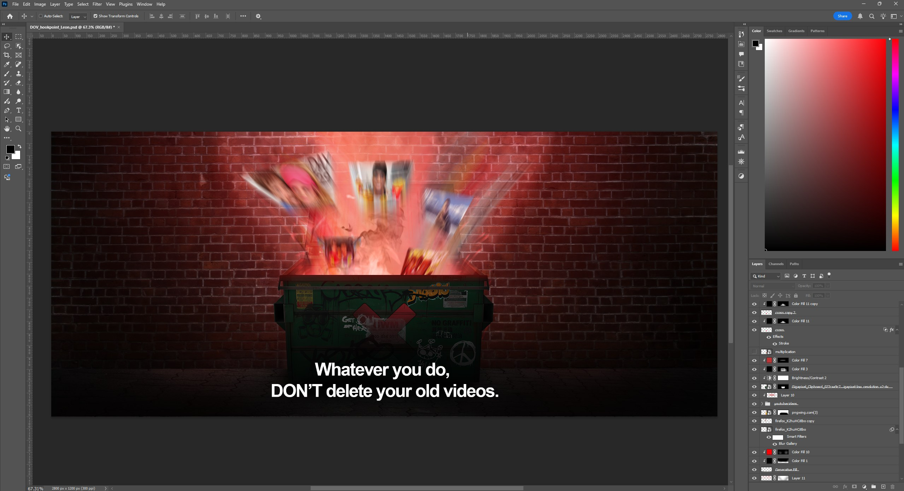
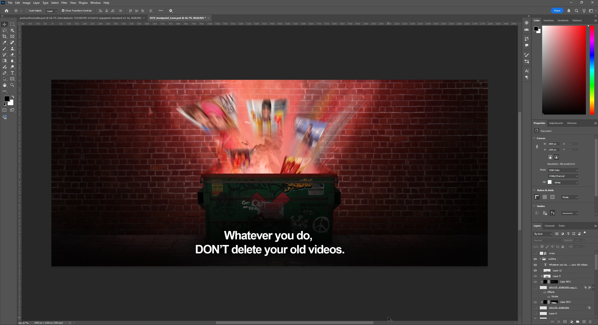
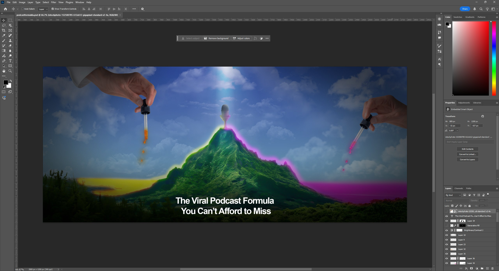
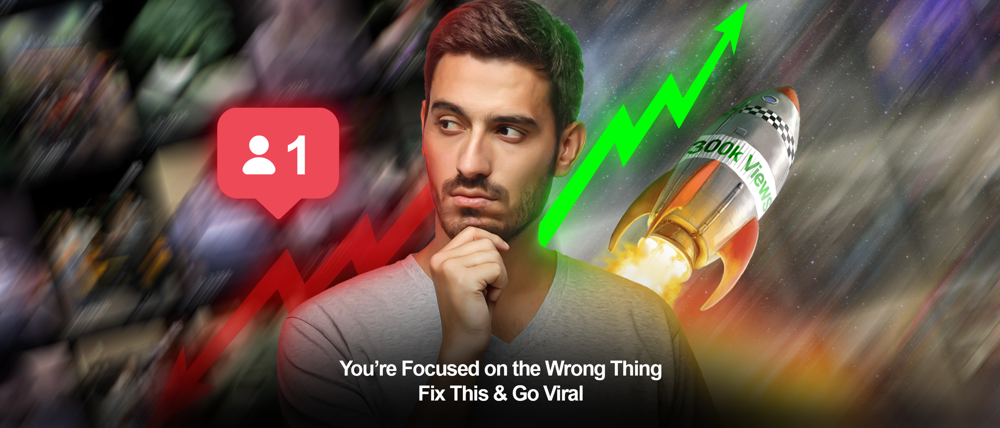
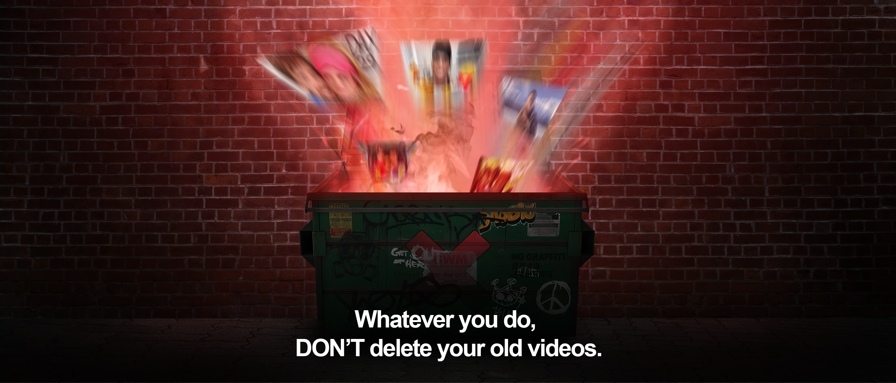
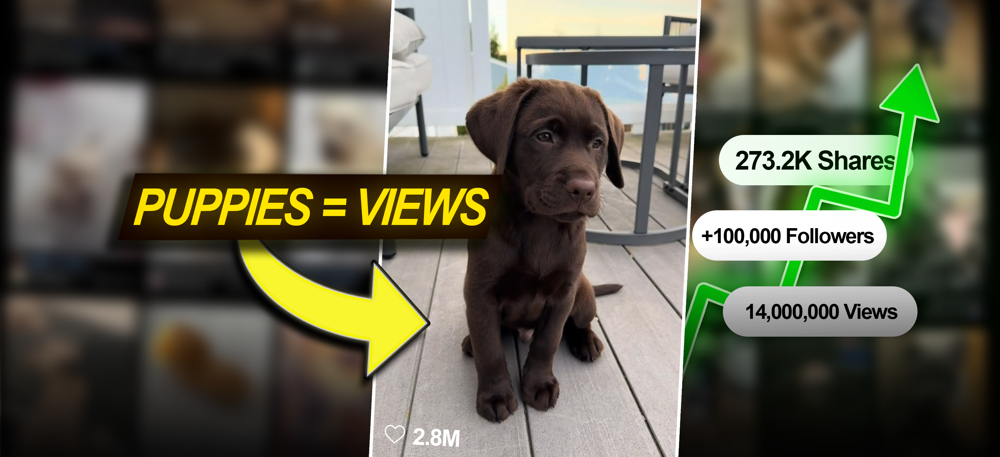

Hookpoint

Overview
Hookpoint helps brands stand out in the noisy digital landscape by creating marketing strategies and content designed to capture attention in under three seconds. As part of their team, I am responsible for designing the thumbnail graphics that accompany their weekly newsletters. These visuals are the first thing readers see — and play a major role in whether they open, click, and engage.
Responsibilities
My work involves more than just making images — I help translate Hookpoint’s marketing ideas into visuals that are bold, clear, and on-brand. My key responsibilities include:
- Designing newsletter thumbnail graphics in Adobe Photoshop
- Researching trends and visual references to ensure designs feel current and engaging
- Choosing typography, color palettes, and composition that reflect Hookpoint’s tone of voice
- Delivering optimised graphics in multiple sizes and formats for different platforms
- Meeting tight deadlines and adapting quickly to last-minute content changes
Design Process
Every newsletter graphic begins with understanding the message and audience. I review the content, identify the key hook or main idea, and sketch possible layouts. This helps me quickly visualise how text and images will interact before opening Photoshop.
Once in Photoshop, I build my designs using a structured layer system for efficiency. I make use of:
- Smart Objects to allow quick editing across multiple variations
- Adjustment Layers for fast non-destructive color correction
- Typography Hierarchy to guide the reader’s eye and highlight the key message
- Export Presets to save time and ensure consistent output quality

Challenges & Problem-Solving
A major part of my role is working under strict deadlines. Newsletters are time-sensitive, so I’ve developed workflows to move fast without sacrificing quality. If last-minute changes come in (e.g., headline adjustments or new images), I can quickly adjust thanks to my organised files and use of reusable templates.
I also have to make sure designs remain legible at very small sizes (like mobile previews). To solve this, I test my thumbnails at multiple scales before exporting to ensure they remain clear and impactful even when viewed on a phone screen. I am required to also center the majority of the text and visuals to ensure they are not cut off when posted to LinkedIn.


Reflection
Working with Hookpoint has sharpened my ability to design quickly, think visually under pressure,
and collaborate effectively with a remote team. It has also strengthened my Photoshop
workflow — from concept sketching to final delivery — making me a more efficient and
reliable designer.
Working under strict deadlines taught me how to prioritise the most impactful elements
of a design and make clear, fast decisions without compromising quality. I’ve learned
how to anticipate potential changes, build reusable assets, and streamline my process
to deliver consistent results week after week.
Beyond technical improvement, this experience has made me more adaptable and confident
as a creative professional. I am now more comfortable collaborating with teams in
different time zones, responding to feedback quickly, and finding creative solutions
when unexpected challenges arise. Overall, it has been a valuable opportunity to
develop not just my design skills, but also my ability to work strategically and
professionally in a fast-paced environment.
Gallery


